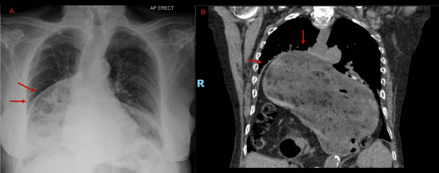

Ficha del catálogo
Hernia hiatal
- Sistema
- Digestivo
- Modalidad
- RX
- Región
- Unión esofagogástrica y hiato diafragmático
- Dificultad
- Básico
Es la protrusión de una porción del estómago hacia el tórax a través del hiato esofágico del diafragma. La forma por deslizamiento, tipo I, representa la gran mayoría de los casos y se asocia con reflujo gastroesofágico. Las formas paraesofágicas son menos frecuentes pero conllevan riesgo de vólvulo gástrico, incarceración y estrangulación.
Técnica
El esofagograma con bario es el estudio funcional de elección para demostrarla y clasificarla. Se realiza con el paciente en bipedestación y en decúbito, en proyecciones frontal y oblicua, y se emplean maniobras que aumentan la presión abdominal, como Valsalva o la ingesta rápida en decúbito. La tomografía de tórax y abdomen detecta y mide bien las hernias grandes y define el contenido del saco herniario.
Qué observar
- Ascenso de la unión esofagogástrica por encima del hiato diafragmático
- Pliegues gástricos gruesos que atraviesan el hiato hacia el tórax
- Anillo de Schatzki como muesca anular en el extremo distal del esófago
- Tamaño del defecto hiatal y proporción del estómago herniado
- Posición del fundus respecto a la unión esofagogástrica para diferenciar el tipo de hernia
- Signos de complicación como vólvulo, obstrucción o sufrimiento de la pared
Hallazgos
En la radiografía de tórax se puede ver una opacidad retrocardiaca con nivel hidroaéreo, que corresponde al estómago intratorácico. En el estudio baritado se observa la unión esofagogástrica desplazada en sentido craneal y una bolsa gástrica por encima del diafragma, con pliegues gástricos que cruzan el hiato. En la hernia paraesofágica pura la unión permanece en posición normal mientras el fundus asciende junto al esófago. La tomografía muestra separación de los pilares diafragmáticos y contenido gástrico, y a veces epiploico o de otras vísceras, dentro del tórax.
Perlas
La distinción entre hernia por deslizamiento y hernia paraesofágica no es académica sino quirúrgica: En la paraesofágica la unión esofagogástrica queda en su sitio y el fundus asciende a su lado, lo que crea riesgo de vólvulo y de estrangulación. Por eso el informe debe indicar siempre la posición de la unión esofagogástrica en relación con el diafragma y no limitarse a decir que existe hernia hiatal.
Diagnóstico diferencial
- Divertículo epifrénico
- Saco que nace de la pared esofágica sin pliegues gástricos y con cuello estrecho.
- Acalasia con esófago dilatado
- Dilatación esofágica con extremo distal afilado en pico de pájaro, sin bolsa gástrica supradiafragmática.
- Hernia de Morgagni o de Bochdalek
- Defecto diafragmático anterior derecho o posterolateral izquierdo, ajeno al hiato esofágico.
- Quiste o masa mediastínica posterior
- No contiene aire ni contraste oral y no se continúa con el estómago.
- Absceso o colección mediastínica
- Pared engrosada con realce, cuadro séptico y ausencia de pliegues gástricos.
Simuladores
- Ampolla frénica o cámara gástrica normal vista en proyección lateral
- Elevación diafragmática o eventración, que desplaza vísceras hacia arriba sin defecto hiatal
- Distensión gástrica transitoria en el paciente con sonda o con aerofagia
Por modalidad
- RX
- El esofagograma con bario muestra la anatomía dinámica, el tipo de hernia y los anillos o estenosis asociadas
- TC
- Define el tamaño del hiato, el contenido del saco y las complicaciones agudas como el vólvulo gástrico
- US
- Aporta poco en el adulto (en lactantes puede valorar la unión esofagogástrica y el reflujo)
Protocolo
Esofagograma con bario de densidad adecuada, en bipedestación y decúbito, con proyecciones frontal y oblicua anterior derecha, incluyendo doble contraste y maniobras de provocación. En tomografía se emplea contraste intravenoso con cortes finos y reconstrucciones coronales y sagitales centradas en el hiato. Ante sospecha de vólvulo se prioriza la tomografía urgente por su capacidad de mostrar isquemia y obstrucción.
Clasificación
Se reconocen cuatro tipos. El tipo I o por deslizamiento, con ascenso de la unión esofagogástrica, es el más frecuente. El tipo II o paraesofágica pura, con unión en posición normal y ascenso del fundus junto al esófago. El tipo III o mixta, que combina el ascenso de la unión con el del fundus y es la forma paraesofágica más habitual en la práctica. El tipo IV, en la que el saco contiene otras vísceras además del estómago, como colon, bazo, páncreas o intestino delgado.
Errores frecuentes
- Informar solo la presencia de hernia sin especificar el tipo ni la posición de la unión esofagogástrica
- Confundir una hernia grande con una masa o colección mediastínica en la radiografía simple
- Subestimar hernias por deslizamiento pequeñas al no realizar maniobras de provocación durante el estudio

hernia hiatal paraesofagica esofagograma union esofagogastrica reflujo Schatzki diafragma